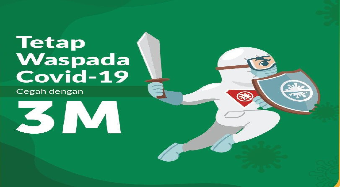

3 M
3 M
27/11/2020, 11:00 WIBPenyebaran virus Corona atau COVID-19 di Indonesia harus ditekan semaksimal mungkin. Salah satu cara utamanya adalah dengan menerapkan perilaku hidup disiplin. Maka, selalu #ingatpesanibu dengan melakukan langkah 3M sebagai upaya mencegah sekaligus memutus rantai penularan COVID-19. Apa itu 3M?
Membiasakan dan mewajibkan diri untuk mematuhi protokol kesehatan merupakan salah satu kunci agar virus COVID-19 dapat ditekan penyebarannya. Namun, dibutuhkan perilaku disiplin dari dari sendiri, juga sangat perlu untuk dilakukan secara kolektif dengan penuh kesadaran.
"Kalau kita sudah patuh pada protokol kesehatan, jangan lupa mengingatkan orang lain untuk patuh pada protokol kesehatan," kata Juru Bicara Satgas Penanganan COVID-19, Wiku Adisasmito, dalam jumpa pers di Kantor Presiden, Kamis (1/10/2020), yang disiarkan kanal YouTube Sekretariat Presiden dan dikutip dari covid19.go.id.
Menerapkan 3M Demi Keselamatan Bersama Perilaku disiplin 3M yang termasuk dalam kampanye #ingatpesanibu demi terus menekan penyebaran virus COVID-19 hendaknya diterapkan dan dibiasakan dalam kehidupan sehari-hari, terlebih di tengah situasi pandemi seperti sekarang ini. Lantas, apa itu 3M? Penerapan 3M dapat dilakukan dengan menjalankan setidaknya 3 (tiga) perilaku disiplin yaitu:
- Memakai masker
- Mencuci tangan
- Menjaga jarak dan menghindari kerumunan
Menurut paparan Wiku Adisasmito berdasarkan penelitian internasional, memakai masker kain dapat menurunkan risiko penularan COVID-19 sebesar 45 persen. Lebih baik lagi adalah mengenakan masker bedah yang mampu menekan penyebaran virus COVID-19 hingga 70 persen.
-
IMPORTANT POSTS
3M Covid-19
27/11/2020, 11:00 WIB -
RECENT POSTS
-
.png)
Pecah Rekor Corona dan Prediksi Kasus Naik pada Desember
27/11/2020, 11:00 WIB -
.png)
Kapan Vaksin Covid-19 Tersedia di Negara-negara Asia? Ini Perkiraannya
28/11/2020 07:28 WIB
-
-
DOWNLOADS
PPT Upaya Promkes COVID-19
-
.png)